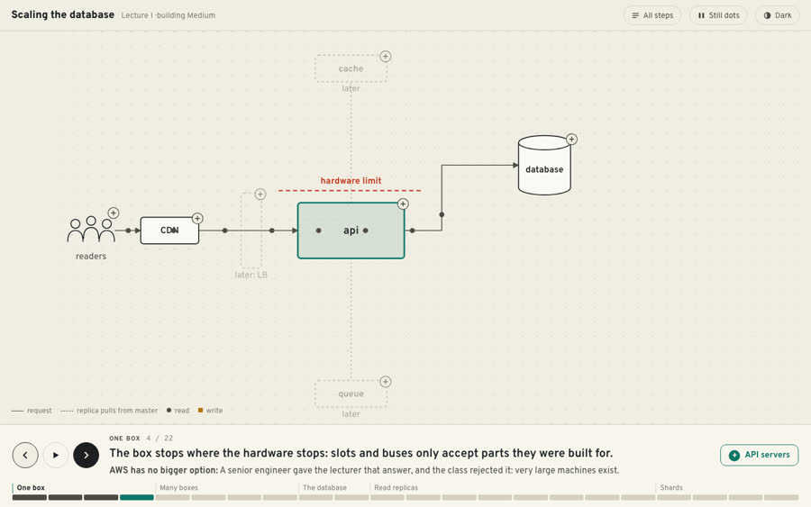
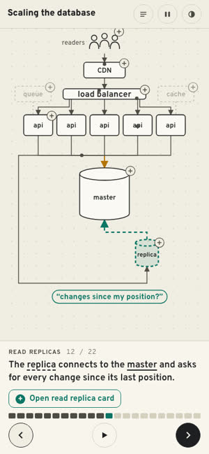

Living Map
Medium's architecture fills the screen. A 22-step tour changes it from one box to sharded databases, one sentence per step. Click any part for its card.



How to try it
- Use ← → or the round buttons; drag the bar at the bottom to jump between chapters
- Click a part on the map (the small +) to open its card
- Try the sliders inside the cards: replicas needed, replica lag, users moved when a shard is added
Text on screen: About 5% of the screen is text on the map, 17% with a card open
- Works
- Builds the picture of the whole system the lecture is really teaching
- Calm; easy to come back to as revision
- Weak
- Some lines cross on the replica and shard steps; a dot sits on the CDN label
- Cards are still dense